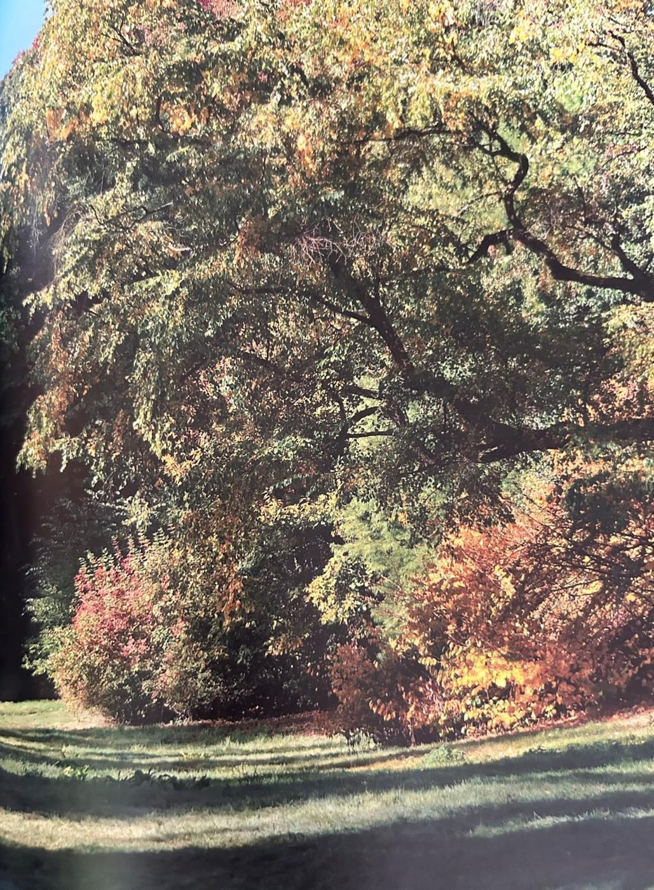
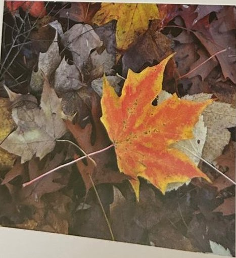

Groepen › Nieuwe Wereld
13. Ontario & Québec, Gebied van de Grote Meren

In het gebied van de Grote Meren en de Saint-Lawrencerivier staan bossen van de types ‘Noordelijk-Loofhout/Hemlock’ en ‘Beuk/Esdoorn/Linde’, volgens een Amerikaanse indeling gebaseerd op de dominante boomsoorten. Een aantal van de naaldhoutsoorten uit de Far West hebben een tegenhanger hier in het Oosten : zo is de Canadese hemlockspar een iets donkerder getinte, minder rijzige versie van de West Amerikaanse hemlock; de Oost Amerikaanse Levensboom is het kleine broertje van de Reuzenlevensboom; de Weymouthden is haast niet te onderscheiden van de West Amerikaanse Witte den. Weymouthden en Hemlockspar zijn er overigens top houtproductiesoorten, die ook in Europa vaak zijn ingevoerd en toegepast, Hemlock (de Westamerikaanse soort dan) met kennelijk meer succes dan Weymouth. Maar arboretumgroep 13 leidt ons vooral in tot de rijke Oost-amerikaanse loofhoutbossen. Amerikaanse eiken, lindes en esdoornsoorten staan hier al sinds de oprichting van het arboretum in 1902. Amerikaanse olmen vielen ten prooi aan de iepenspintkever maar zijn recent nieuw aangeplant, evenals de Amerikaanse grootbladige beuk, die voorheen ontbrak.
Uit het boek
1,30 ha · 35 soorten · 483 bomen
- In goede jaren een kleine "Indian summer" met suikeresdoorn, rode esdoorn, linde en Amerikaanse beuk.
- De Amerikaanse iepen stierven aan de iepenziekte en zijn onlangs heraangeplant.


Bron: Geografisch Arboretum Tervuren. Een wereldreis rond bomen (2020), p. 146 en volgende.
Deelgroepen
- 13 – Ontario
Soorten in deze groep (35)
- Quercus rubraAmerikaanse eik · 70 bomen
- Juglans cinereaGrijze walnoot · 63 bomen
- Pinus strobusWeymouthden · 59 bomen
- Acer rubrumRode esdoorn · 28 bomen
- Fraxinus americanaWitte es · 23 bomen
- Cornus alternifoliaAmerikaanse pagodekornoelje · 20 bomen
- Ulmus americanaAmerikaanse iep · 20 bomen
- Betula alleghaniensisGele berk · 18 bomen
- Fagus grandifoliaGrootbladige beuk · 17 bomen
- Prunus serotinaAmerikaanse vogelkers · 16 bomen
- Ostrya virginianaAmerikaanse hopbeuk · 15 bomen
- Sorbus americana15 bomen
- Acer saccharumSuikeresdoorn · 14 bomen
- Tsuga canadensisOost-Amerikaanse hemlockspar · 14 bomen
- Fraxinus pennsylvanicaGroene es · 13 bomen
- Platanus x acerifoliaGewone plataan · 13 bomen
- Thuja occidentalisWesterse levensboom · 8 bomen
- Tilia americanaAmerikaanse linde · 6 bomen
- Vaccinium corymbosumAmerikaanse blauwe bes · 6 bomen
- Aesculus parvifloraHerfstpaardenkastanje · 5 bomen
- Crataegus calpodendron5 bomen
- Crataegus punctata5 bomen
- Crataegus canbyi4 bomen
- Acer speciesesdoorn · 3 bomen
- Acer spicatumAaresdoorn · 3 bomen
- Amelanchier canadensisCanadees krentenboompje · 3 bomen
- Carya cordiformisBitternoot hickory · 3 bomen
- Crataegus chrysocarpa3 bomen
- Juglans nigraZwarte walnoot · 3 bomen
- Corylus americanaAmerikaanse hazelaar · 2 bomen
- Sambucus pubens2 bomen
- Betula papyriferaPapierberk · 1 boom
- Prunus pensylvanica1 boom
- Sambucus canadensis1 boom
- Spiraea latifolia1 boom
Tekst en foto: arboretum-tervuren.be (Koninklijke Schenking), met toestemming gebruikt.